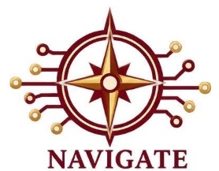
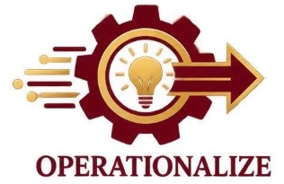
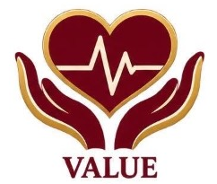
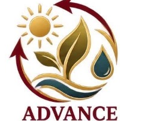
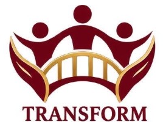

The INNOVATES Research Framework
Anchoring the strategic inquiries of Medical Colleges of Northern Philippines (MCNP) and International School of Asia and the Pacific (ISAP) across nine transformative agendas: INSPIRE, NURTURE, NAVIGATE, OPERATIONALIZE, VALUE, ADVANCE, TRANSFORM, EXPAND, and STRENGTHEN.





INSPIRE: Culture, Capability, and Engagement
This strategic area promotes a culture in which members of the academic community are empowered to learn, lead, collaborate, innovate, and contribute meaningfully to institutional goals. It addresses professional development, participation, recognition, mentoring, motivation, and the conditions that enable people to perform and grow.
NURTURE: Ethics, Quality, and Accountability
This strategic area ensures that academic, administrative, student, and community-related processes are carried out fairly, transparently, consistently, and in accordance with applicable laws, policies, professional standards, and institutional values.
OPERATIONALIZE: Knowledge Utilization, Innovation, and Improvement
This strategic area emphasizes action. It ensures that lessons from assessments, evaluations, stakeholder feedback, professional practice, institutional data, and completed studies are translated into practical improvements and sustainable solutions.
VALUE: Health, Safety, and Well-Being
This strategic area brings together health promotion, professional healthcare practice, campus safety, psychosocial support, emergency preparedness, security, and healthy learning and working environments.
ADVANCE: Sustainability and Climate Resilience
This strategic area integrates sustainability into academic programs, campus management, resource use, infrastructure, procurement, community initiatives, and institutional decision-making.
TRANSFORM: Community Engagement and Social Impact
This strategic area ensures that community engagement and extension begin with genuine needs and available community assets. It promotes co-design, meaningful participation, coordinated implementation, outcome evaluation, and the sustainability of effective interventions.
EXPAND: Partnerships, Networks, and Global Engagement
This strategic area recognizes that institutional goals are strengthened through collaboration within MCNP–ISAP and with government, industry, healthcare institutions, schools, communities, professional organizations, alumni, civil society, and international partners.
STRENGTHEN: Education and Institutional Performance
This strategic area brings together the institution’s central responsibilities for educational quality, student development, employee effectiveness, service excellence, sound governance, resource management, and evidence-based improvement.
Institutional Priority Areas (1–13)
The nine INNOVATES agenda areas systematically encompass all institutional priority areas recognized by the Research and Development Center:
Ready to Propose an RDC Research Project?
Faculty members, inter-college research teams, and graduate scholars may submit proposals aligned with any of the nine INNOVATES agenda areas during the bi-annual Institutional Research Grant cycle.